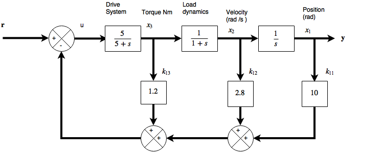

Systems are often designed with frequency domain techniques and the process can be iterative. The problem with this is that systems may not in fact be controllable, hence in State Space methods there
is a contrallability test. The design of State Variable feedback and velocity feedback systems can improve a systems closed loop performance with feedback. The state approach to designing such systems is a synthesis based approached. This means that the desired performance is specified in advance. Certain pole zero combinations could prevent the plan from working, so the question is whether or not a design is possible. The concept of controllability tells the designer whether or not a SVF system can be sythesized to give the required performance.
Controllability
For a standard State space system
\( \mathbf{ \dot x} = \mathbf{Ax}+\mathbf{Bu} \)
\(\mathbf y=\mathbf{Cx}+\mathbf{Du} \)
The controllability involves finding the rank of the following partitioned matrix.
\([
\begin{array} \mathbf{B} &\mathbf {AB}&\mathbf{A}^2\mathbf B &\cdots& \mathbf A^{n-1}\mathbf B\end{array}
]\)
This matrix will often be rectangular having more columns than rows. If the matrix is of full rank (rank equal to the number of rows in \(\mathbf B\) then the system is completely state controllable. If it is not of full rank then the system is only partially state controllable - only a subset of elements of the state vector or the positions of a subset of the poles can be adjusted from the input. The rank deficiency of the matrix is equal to the number of uncontrollable modes in the system.
Controllability of the Antenna positioning system
\(\begin{pmatrix}\dot x_1\\ \dot x_2\\ \dot x_3 \end{pmatrix}= \begin{pmatrix} 0&1&0\\0&-1&1\\0&0&-5\end{pmatrix}\begin{pmatrix} x_1\\x_2\\x_3\end{pmatrix}+\begin{pmatrix}0\\0\\5\end{pmatrix}u \)
and the output equation is simply \(y=x_1\) or
\(\begin{pmatrix} y_1\\ y_2\\ y_3 \end{pmatrix}= \mathbf c\mathbf x=\begin{pmatrix} 1&0&0\end{pmatrix}\begin{pmatrix} x_1\\x_2\\x_3\end{pmatrix}\)
Is this system controllable?
\(\mathbf{AB}=\begin{pmatrix} 0\\ 5\\ -25 \end{pmatrix}\qquad\ and \qquad \mathbf{A}^2\mathbf B=\mathbf A[\mathbf{AB}]=\begin{pmatrix}5\\-30\\125\end{pmatrix}u \)
the controllability matrix is therefore
\(\begin{pmatrix} \mathbf b &\mathbf {Ab}&\mathbf A^2\mathbf b\ \end{pmatrix}=\begin{pmatrix}0&0&5\\0&5&-30\\5&-25&125\end{pmatrix} \)
This has a non-zero determinant and is therefore of full rank (three) so the system is completely state controllable.
Observability
Definition
A system is completely observable if it is possible to reconstruct the state vector completely from measurements made at the systems output \(\mathbf y\).
Observability Test
A rank test can also be used to test whether a system is observable. In mathematical terminaology observability is the dual of controlability. Thw observability test matrix can be generated from the controllability matrix by using \(\mathbf A^T\) instead of \(\mathbf A\), \(\mathbf C^T\) instead of \(\mathbf B\) and then transposing the result.
\([
\begin{array} \mathbf{C}^T &\mathbf {A}^T\mathbf C^T&({\mathbf{A}}^T)^2\mathbf C^T &\cdots& ({\mathbf A}^T)^{n-1}\mathbf C^T\end{array}
]\)
If this matrix is of full rank (rank is equal to the number of columns in \(\mathbf C\)) then the system is completely observable. The values of the all the states can be found from information at the systems output. If it is not full rank then the system is only partially observable. The rank deficiency of the test matrix is equal to the number of unobservable modes in the system. The equivalent transposed matrix is:
\(\left[
\begin{array} \mathbf{C} \\ \mathbf {C}\mathbf A \\\mathbf C\mathbf A^2 \\ \cdots \\ \mathbf C\mathbf A^{n-1}\end{array}
\right]\)
Controllability and observability are not fundamental attributes of a LTF because they also depend on the particular state space model chosen. For example if a system had 2 blocks with an identical pole and zero, then if the block containing the pole comes first the plant will be controllable, however if the block containing the pole comes after the zero, then it will be observable. The LTF of the system would be the same in either case. If the identical pole and zero occur in the same part of the plant then it would be uncontrollable and unobservable. Mode cancellations are a fundamental attribute of the real plant, but observability and controllability depend on the state space model. Pole zero cancellation in frequency domain models will lower the order of the system, however the cancelled modes will still exist, and these are not the only reason for lack of observability or controllability, for example repeated eigenvalues (multiple identical poles) can also cause these problems.
Stabilizability
The question as to whether moving a pole will stabilize a system, and whether the pole in question is one of the controllable modes, is the question "is the system stabilizable?". To find out which modes can be moved in this way a matrix called the sensitivity matrix is used:
\(\mathbf S(\lambda_i) = [\begin{array} &\mathbf A -\lambda_i \mathbf I & \mathbf B \end{array}] \)
If \(rank(\mathbf S(\lambda_i))\) is less than n, then \(\lambda_i\) is an unontrollable mode. This type of test can also test which modes of a system are unobservable by using the dual of the sensitivity matrix.(replacing \(\mathbf A\) with \(\mathbf A^T\) amd \(\mathbf B\) with \(\mathbf C^T\) ).
State variable Feedback
The idea of feedback is to obtain a compromise between dynamic (transient) performance and steady state performance. And also to adjust the output to compensate for error signals. Feedback also gives measures of progress, indicates gain and phase margins, rise time, settling time, peak overshoot and steady state error. To achieve this either the plant is modified or a controller is added. The addition of extra controllers has the effect of adding new poles and zeros into the transfer function. These extra poles and zeros are usually set using Bode, Nichols, root locus or polar plots. IF there are undesirable poles in the open loop system they are quite often cancelled in the compensator.
In state space methods for time domain design the choosing of closed loop pole positions is a commonly used approach. The aim is to design a controller which effectively moves "all" the closed loop poles into the closed loop positions. The method often used is to feed back the state vector into the system input in some way.
State Varable Feedback
For a standard state space system
\( \mathbf{ \dot x} = \mathbf{Ax}+\mathbf{Bu} \)
\(\mathbf y=\mathbf{Cx}+\mathbf{Du} \)
considering the effects of feeding the state vector back to the input
The feedback matrix \(\mathbf K\) allows any required combination of the states to be fed back to each input in the general case.For a system with \(n\) states and \(m\) inputs the matrix \(\mathbf K\) must be of dimension \(m\times n\). With feedback in place the closed loop state equation becomes:
\( \mathbf{ \dot x}=\mathbf{Ax}+\mathbf{Bu}=\mathbf{Ax}+\mathbf B[\mathbf r-\mathbf{Kx}]\)
or
\(\mathbf {\dot x}=[\mathbf A-\mathbf{BK}]\mathbf x +\mathbf{}Br\)
if the \(\mathbf D\) matrix is absent from the diagram the output equation remains unchanged ...
\(\mathbf y=\mathbf {Cx}\)
otherwise
\(\mathbf y=[\mathbf C-\mathbf{DK}]\mathbf x + \mathbf {Dr}\)
Assuming that \(\mathbf D\) is absent, the result is a state space model of the closed-loop plant relating \(\mathbf r\) and \(\mathbf y\) with the same state vector as the open loop plant.
\(\mathbf{ \dot x} = \mathbf A_c \mathbf x + \mathbf {Br},\qquad \mathbf y=\mathbf{Cx}\)
where \(\mathbf {A}_c = \mathbf A-\mathbf {BK}\) is the closed loop plant matrix. the Eigenvalues of \(\mathbf A_c\) are the same as the closed loop poles of the system . The elements of \(\mathbf K\) can be chosen to give any required set of closed loop Eigenvalues (poles) if the original system is completely state controllable.
There is obviously more than one way to chose the elements of \(\mathbf K\), the easiest way is to make a comparison between the closed loop characteristic equation (CLCE) and the CLCE that will be obtain from \(\mathbf A_c\) and fixing the elements of \(\mathbf K\) to make the two agree. This basic method of designing SVF schemes produces regulators which maintain the system at a steady state and reject disturbances. They can also be converted to tracking systems.
A state variable feedback regulator for the Antenna Positioner
\(\begin{pmatrix}\dot x_1\\ \dot x_2\\ \dot x_3 \end{pmatrix}= \begin{pmatrix} 0&1&0\\0&-1&1\\0&0&-5\end{pmatrix}\begin{pmatrix} x_1\\x_2\\x_3\end{pmatrix}+\begin{pmatrix}0\\0\\5\end{pmatrix}u \)
and the output equation is simply \(y=x_1\) or
\(\begin{pmatrix} y_1\\ y_2\\ y_3 \end{pmatrix}= \mathbf c\mathbf x=\begin{pmatrix} 1&0&0\end{pmatrix}\begin{pmatrix} x_1\\x_2\\x_3\end{pmatrix}\)
This model was shown to be fully controllable. An SVF controller can therefore be designed to place the closed loop poles in the desired locations. The \(\mathbf K\) matrix will need to be a \(1\times 3\) row vector because the system has one input and three states.
$$ \mathbf A_c=\mathbf A-\mathbf {bK}= \begin{pmatrix} 0&1&0\\0&-1&1\\0&0&-5\end{pmatrix}-\begin{pmatrix}0\\0\\5\end{pmatrix}
\begin{pmatrix}k_{11}&k_{12}&k_{13}\end{pmatrix}
$$
and this equals
$$ \begin{pmatrix} 0&1&0\\0&-1&1\\-5k_{11}&-5k_{12}&-5-5k_{13}\end{pmatrix}
$$
The actual closed-loop poles are given by the Eigenvalues of this matrix
\( |\lambda \mathbf I-\mathbf A_c|=
\left|\begin{array} & \lambda&-1&0\\0&\lambda +1&-1\\5k_{11}&5k_{12}&\lambda+5+5k_{13}\end{array}
\right|\\=\lambda^3+(6+5k_{13})\lambda^2+(5+5k_{12}+5k_{13})\lambda + 5k_{11}=0
\)
The required CLCE can be specified from the desired closed loop pole positions and compared with this equation to fix \(\mathbf k\). An abritrary set of closed loop pole locations is chosen here
\(\lambda=-1\pm 2j\) and \(\lambda = -10\)
The required CLCE for the system is ...
\((\lambda + 1 + 2j)(\lambda + 1-2j)(\lambda+ 10) = \lambda^3+12\lambda^2+25\lambda + 50=0\)
comparing this to the equation for \(\mathbf k\) gives the following
\(6+5k_{11}=12\) therefore \( k_{13}=1.2\)
\(5+5k_{13}+5k_{12}=25 \) therefore \(k_{12}=4-k_{13}=2.8\)
\(5k_{11}=50\) therefore \(k_{11}=10\)
and
\(\mathbf k = [\begin{array}& 10&2.8&1.2\end{array}]\)
and so for simulation purposes this system can be convcerted back to the transfer function representation:-
\( \displaystyle \frac{Y(s)}{R(s)}=\frac{5}{2^3+(6+5k_{13})s^2+5(1+k_{12}+k_{13})s+5k_{11}}=\frac{5}{s^3+12s^2+25s+50}\)
and the corresponding simulation diagram with states preserved

To plot the curves of \(k\) the system can be re-organized with the k values as the output and plotted ... however it can often be simpler to use a simulation package (i.e simulink).
The system steady state error (s.s.e) does not have a good performance. The output at \(y=x_1\) only settles at 0.1 units. This can be deduced using the final value theorem tp the transfer function revaling that the steady state output following a unit step input is
\(\displaystyle \frac{1}{k_{11}}=0.1\)
From the diagram the only condition that will produce a steady state error is when \(x_2\) is zero (otherwise the integrator input will always be ramping). For this to be the case \(x_3\) and \(u\) must also be zero, therefore \(r=10x_1\) at steady state. If \(r=1\) then the output \(x_1\) must be 0.1. This is because the system is a regulator designed to maintain a plant at steady state. Regulators are appropriate for temperature control systems, drive systems in factories, etc. Any system that must maintain a steady output. The models for these systems are derived at the required set point and studied for deviations from the set point. For such systems the reference input is therefore zero. During the modelling process (as this is a linear system) the required steady state operating position is subtracted from the \(x_1\) variable leaving \(x_1=0\). The reference signal causing the output is subtracted from r. The unit step disturbs the system from its set point, and the model effectively attempts to go back to zero.